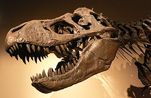
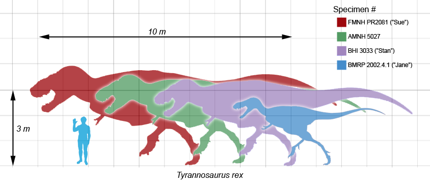

Tyrannosaurus

Tyrannosaurus (pronounced /tɨˌrænəˈsɔːrəs/ or /taɪˌrænoʊˈsɔːrəs/, meaning 'tyrant lizard') is a genus of theropod dinosaur. The famous species Tyrannosaurus rex ('rex' meaning 'king' in Latin), commonly abbreviated to T. rex, is a fixture in popular culture around the world. It lived throughout what is now western North America, with a much wider range than other tyrannosaurids. Fossils of T. rex are found in a variety of rock formations dating to the last three million years of the Cretaceous Period, approximately 68 to 65 million years ago; it was among the last non-avian dinosaurs to exist prior to the Cretaceous–Tertiary extinction event.
Like other tyrannosaurids, Tyrannosaurus was a bipedal carnivore with a massive skull balanced by a long, heavy tail. Relative to the large and powerful hindlimbs, Tyrannosaurus forelimbs were small, though unusually powerful for their size, and bore two clawed digits. Although other theropods rivaled or exceeded T. rex in size, it was the largest known tyrannosaurid and one of the largest known land predators, measuring up to 13 metres (43 ft) in length,[1] up to 4 metres (13 ft) tall at the hips,[2] and up to 6.8 metric tons (7.5 short tons) in weight.[3] By far the largest carnivore in its environment, T. rex may have been an apex predator, preying upon hadrosaurs and ceratopsians, although some experts have suggested it was primarily a scavenger. The debate over Tyrannosaurus as apex predator or scavenger is among the longest running debates in paleontology.
More than 30 specimens of T. rex have been identified, some of which are nearly complete skeletons. Soft tissue and proteins have been reported in at least one of these specimens. The abundance of fossil material has allowed significant research into many aspects of its biology, including life history and biomechanics. The feeding habits, physiology and potential speed of T. rex are a few subjects of debate. Its taxonomy is also controversial, with some scientists considering Tarbosaurus bataar from Asia to represent a second species of Tyrannosaurus and others maintaining Tarbosaurus as a separate genus. Several other genera of North American tyrannosaurids have also been synonymized with Tyrannosaurus.

Tyrannosaurus rex was one of the largest land carnivores of all time; the largest complete specimen, FMNH PR2081 ("Sue"), measured 12.8 metres (42 ft) long, and was 4.0 metres (13 ft) tall at the hips.[2] Mass estimates have varied widely over the years, from more than 7.2 metric tons (7.9 short tons),[4] to less than 4.5 metric tons (5.0 short tons),[5][6] with most modern estimates ranging between 5.4 and 6.8 metric tons (6.0 and 7.5 short tons).[3][7][8][9] Although Tyrannosaurus rex was larger than the well known Jurassic theropod Allosaurus, it was slightly smaller than Cretaceous carnivores Spinosaurus and Giganotosaurus.[10][11]
The neck of T. rex formed a natural S-shaped curve like that of other theropods, but was short and muscular to support the massive head. The forelimbs had only two clawed fingers,[1] along with an additional small metacarpal representing the remnant of a third digit.[12] In contrast the hind limbs were among the longest in proportion to body size of any theropod. The tail was heavy and long, sometimes containing over forty vertebrae, in order to balance the massive head and torso. To compensate for the immense bulk of the animal, many bones throughout the skeleton were hollow, reducing its weight without significant loss of strength.[1]
The largest known T. rex skulls measure up to 5 feet (1.5 m) in length.[13] Large fenestrae (openings) in the skull reduced weight and provided areas for muscle attachment, as in all carnivorous theropods. But in other respects Tyrannosaurus’ skull was significantly different from those of large non-tyrannosauroid theropods. It was extremely wide at the rear but had a narrow snout, allowing unusually good binocular vision.[14][15] The skull bones were massive and the nasals and some other bones were fused, preventing movement between them; but many were pneumatized (contained a "honeycomb" of tiny air spaces) which may have made the bones more flexible as well as lighter. These and other skull-strengthening features are part of the tyrannosaurid trend towards an increasingly powerful bite, which easily surpassed that of all non-tyrannosaurids.[16][17][18] The tip of the upper jaw was U-shaped (most non-tyrannosauroid carnivores had V-shaped upper jaws), which increased the amount of tissue and bone a tyrannosaur could rip out with one bite, although it also increased the stresses on the front teeth.[19][20]
Life restoration of a Tyrannosaurus rex.
The teeth of T. rex displayed marked heterodonty (differences in shape).[1][21] The premaxillary teeth at the front of the upper jaw were closely packed, D-shaped in cross-section, had reinforcing ridges on the rear surface, were incisiform (their tips were chisel-like blades) and curved backwards. The D-shaped cross-section, reinforcing ridges and backwards curve reduced the risk that the teeth would snap when Tyrannosaurus bit and pulled. The remaining teeth were robust, like "lethal bananas" rather than daggers; more widely spaced and also had reinforcing ridges.[22] Those in the upper jaw were larger than those in all but the rear of the lower jaw. The largest found so far is estimated to have been 30 centimetres (12 in) long including the root when the animal was alive, making it the largest tooth of any carnivorous dinosaur.[2]